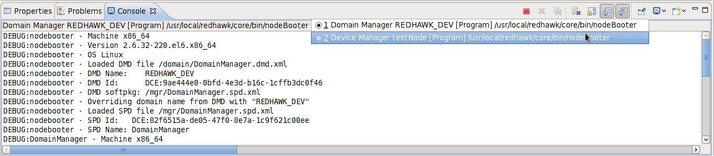

Chapter 18
Exploring a Running Domain Using the REDHAWK IDE
The Domain Manager, as described in Section 12.2, contains knowledge of all existing CORBA-enabled objects installed or loaded onto the system. This includes references to all file systems (through the File Manager), Device Managers, and all Applications (and their Resources). The Domain Manager is seen as the central bookkeeper. The REDHAWK IDE can be used to run or connect to a running Domain, view the contents of a running Domain, and launch and interact with Applications within the Domain.
18.1 Connecting to a Domain
In the IDE, you can launch and connect to a Domain through the IDE interface or connect to a running Domain.
The procedure for launching a Domain and a Device Manager from the command line is shown in Section 12.2.1.
18.1.1 Launching and Connecting Using the IDE
The following procedure explains how to launch and connect to a Domain through the IDE.
- In the REDHAWK Explorer View, right-click Target SDR and select Launch
Domain…
The Launch Domain Manager window is displayed. (Figure 18.2)
- In the Domain Name field, enter a name.
- Optionally, select a Device Manager to start.
A running Device Manager is required to launch Applications.
- Optionally, in either the Domain Manager or Device Manager section, select a Debug Level. By default, the Debug Level is set to Info, which displays any messages at the Info level or higher: (Info, Warn, Error, and Fatal message levels). If this is the first time using REDHAWK, changing the Debug Level from Info to Debug for both the Domain and Device Manager may be helpful in the learning process.
- Optionally, in either the Domain Manager or Device Manager section, select Arguments for the nodeBooter process. This option is provided to advanced users who are comfortable with command line options. For more information on command line options, refer to Chapter 12.
- Finally, click OK to launch and connect to the new Domain.
- Notice that the IDE reacts to the newly launched Domain:
- The new Domain has been added to the REDHAWK Explorer View
- The new Domain, within a short amount of time, is connected and this connection is indicated to the right of the Domain name within the REDHAWK Explorer View.
- At least one new Console view (within the IDE) has been created. One contains a nodeBooter instance for the Domain Manager that launched and one nodeBooter instance for each Device Manager.

|

|
18.1.2 Connecting to a Running Domain
To connect to a running Domain through the IDE use the following procedure:
- Click the New Domain Connection button (i.e. the plus symbol) in the upper right
of the REDHAWK Explorer View.
The New Domain Manager dialog is displayed. (Figure 18.5)
- Enter the Name Service. This is the CORBA URI of the Naming Service where the Domain is registered. By default, this is populated with the value from the IDE’s preferences (set by selecting Window > Preferences, REDHAWK > Domain Connections, Default Naming Service).
- To specify the Domain to which you want to connect, chose one of the following
options:
- Enter a Display Name and a Domain Name. The Display Name is a used only in the IDE and does not need to match the Domain Name. The Domain Name is the actual name of the Domain in the Naming Service.
- Wait for the IDE to scan the name service for running domains. When the button next to Display Name shows a + icon, click it and select a running Domain from the list.
- Click one of the following options under Connection Settings:
- Don’t connect: This adds the Domain to the REDHAWK Explorer View but leaves the Domain in the disconnected state. When the IDE is restarted, the Domain remains in the REDHAWK Explorer and is in the disconnected state. After adding a disconnected Domain to the REDHAWK Explorer View, the Domain may be connected by right-clicking the Domain and selecting Connect.
- Connect Once: This adds the Domain to the REDHAWK Explorer View and connects the IDE with the Domain. When the REDHAWK IDE is restarted, the Domain remains in the REDHAWK Explorer but is in the disconnected state.
- Always Connect: This adds the Domain to the REDHAWK Explorer View and connects the IDE with the Domain. When the REDHAWK IDE is restarted, the Domain remains in the REDHAWK Explorer and attempts to connect with this Domain.
- Select Finish to close the wizard.
- The Domain now appears in the REDHAWK Explorer View. If Connect Once or
Always Connect was chosen, the Domain is connected. If Don’t Connect was selected,
right-click the Domain and select Connect.
Many of these options may be changed later through the Properties View.
18.2 Viewing the Contents of the Domain in the REDHAWK Explorer View
After the Domain connection is established, the file system visible to the Domain Manager and its attached Device Managers is displayed in the REDHAWK Explorer View. Detailed information about each item is available in the Properties View.
The Domain Manager’s root contains the following folders:
- Device Managers: Displays the currently connected Device Managers (Figure 18.6).
More than one Device Manager may be connected to the Domain. Each Device
Manager entry consists of a single Node, and each Node may contain multiple Devices.
Right-click Devices to monitor Port information, plot Port output, and play audio.
- Event Channels: Displays the Event Channels in the Domain (Figure 18.7).
Right-click a channel to display the Refresh and Listen to Event Channel options.
Select Listen to Event Channel to open the Event Viewer View (Section
15.4.8).
- File Manager: Displays the file systems in the Domain’s view (Figure 18.8). It contains
references to all Components, Devices, Waveforms, and the Device and Domain Managers
configuration and executable files.
- Waveforms: Displays the Applications running on the Domain (Figure 18.9). When
Applications launch, they are displayed and can be expanded to show each of the running
Components within the Application. These Components can be expanded to show the Device
on which they are executing and Port information.


18.3 Working with Waveforms on a Running Domain
If you have a running Domain Manager and Device Manager, you may create and work with Waveforms. (For information on creating Waveforms, refer to Chapter 7). You can launch the Waveform on the Domain, launch additional Components into the running Waveform, stop the running Waveform, and release the Waveform from the Domain.
18.3.1 Launching a Waveform
To launch a Waveform:
- Right-click the Domain and from the Domain context menu, select Launch
Waveform…. (Figure 18.10)
The Launch Waveform wizard is displayed. (Figure 18.11)
- On the Select a Waveform page of the Launch Waveform wizard, perform the following
procedure:
- Select the Waveform to launch.
- Select the Start the Waveform after launching checkbox to start the Waveform and all of its contained Components immediately after launch.
- Click Next.
The Assign Initial Properties page is displayed. (Figure 18.12)
- On the Assign initial Properties page, set the Properties of the Components within the
Waveform. Any Property modified here is specific to this Waveform and does not impact the
Component‘s execution in other environments. As the Properties are changed from
their default values, the now non-default values appear in bold as shown in Figure
18.13.
When you are finished assigning Properties, click Next. The Assign Components to Devices page is displayed. (Figure 18.14)
- The Assign Components to Devices page enables you to specify what executable Device on which each of the Components launches. If the Device setting is Auto, REDHAWK determines the executable Device based on any allocation Properties and dependencies set on the Components and Devices.
- To launch the Waveform, click Finish.
In the REDHAWK Explorer View, the Domain Manager now displays the launched Waveform within the Waveforms folder.
Once the Waveform is started, the REDHAWK Explorer View indicates that the Waveform and Components within the Waveform are in the started state by displaying STARTED next to the Waveform’s instance and the instance of each Component. (Figure 18.15)


18.3.2 Launching Additional Components into a Running Waveform
Once a Waveform has been started, additional Components may be launched into the running Waveform. These additional Components run on the local machine and not on the Domain.
- In the REDHAWK Explorer View, right-click the Waveform and select Open
With > Chalkboard. (Figure 18.16)
This displays the running Waveform in the Chalkboard. (Figure 18.17)
- From the Palette, add additional Components to the Waveform.
Standard runtime actions (Plot, Start, Stop, Terminate, and Connect) are available on the newly added Components. These Components are added only to the currently running instance of the Waveform and are launched on the local machine, NOT in the Domain.
18.3.3 Stopping a Waveform
To stop a running Waveform but keep it on the Domain, in the REDHAWK Explorer View, right-click the running Waveform and select Stop from the context menu. (Figure 18.18).
18.3.4 Releasing a Waveform
To stop a running Waveform and release it from the Domain, in the REDHAWK Explorer View, right-click the running Waveform and select Release from the context menu. (Figure 18.19).
18.4 Plotting BulkIO Ports
The REDHAWK IDE contains the ability to plot using the NeXtMidas plotting framework. If the output Port uses the BulkIO interface, it can take advantage of this feature and plot a line graph or a falling raster.
To bring up a plot within the IDE:
- Make sure that the Component is currently in the started state.
- Right-click the desired Port to plot.
- Select either Plot Port Data or Plot Port FFT.
A new view is created, and it contains the plot of the Port’s output data.
The new view has the same name as the source Port. To view additional source information, hover the mouse over the title.
For more information on how to use the Plot View, refer to Section 15.4.6.
18.5 Increasing the Bandwidth of BulkIO Connections
In the presence of high data rates, plots of BulkIO Ports may not be able to keep up with the data stream. To increase the bandwidth of BulkIO CORBA connections, it is possible to connect using native omniORB libraries. This ability is currently disabled by default. The following procedure explains how to enable this ability from within the IDE:
- Select Window > Preferences.
The Preferences dialog is displayed (Figure 18.20).
- Expand REDHAWK.
- Select BulkIO.
- Set Port Factory to omnijni.
- Click OK.

18.6 Displaying Port Statistics
In addition to Port plotting, a user may want to monitor the amount of data flowing out or into a particular Port. The Port Monitor view displays these link statistics, which are helpful when debugging and can help identify which Component is slowing down or dropping information during data processing. The diagram also visually reflects the Port statistics.
To display the Port Monitor view:
- Make sure that the Component to be monitored is currently in the Started state.
- Right-click the Port to monitor.
- Select Monitor Port.
The Port Monitor view is displayed and contains the following information:
- Name: The name of the Port or Port connection.
- Elements/sec: The rate of CORBA elements transferred in the pushPacket data call.
- MBps: Mega Bytes transferred per second.
- calls/sec: Number of push calls per second to the Port.
- Stream IDs: List of all active stream IDs.
- Avg. Queue Depth: For Components that queue data before processing/sending, the average queue depth measured as a percentage. If a Port does not queue data this value is set to zero.
- Time: The elapsed time, in seconds, since the last packet was transferred via a push packet call.
For more details about the Port Monitor view, refer to Section 15.4.10.
In the diagram, for uses (out) Ports, the color of the connection (the arrow) to the provides Port reflects the statistics. Green indicates that data is flowing. Yellow indicates it has been more than 1 second since the Port pushed data, which may indicate a data flow issue. For provides (in) Ports, the color of the box on the side of the Component, which represents the Port, reflects the statistics. A green Port indicates the queue has plenty of space left. After the queue depth reaches 60 percent, the Port color changes to yellow, and the Port color slowly changes to red as the queue depth approaches 100 percent. Additionally, if there is a queue flush, the Port remains red for 30 seconds after that queue flush.
To configure the colors displayed for the various Port statistics:
- Select Window > Preferences.
- Select the REDHAWK Port Statistics preference page.
- Change the values.
- Click OK.
18.7 Getting Details About Error Conditions
If an error condition occurs within the Domain Manager which prevents a Component, Device, Domain Manager, or Device Manager from running correctly, the object’s representation in the REDHAWK Explorer is marked with a decorator in the lower left corner. Mouse hovering over the item’s icon provides a short description of the issue; however, if more than one problem has occurred, the hover text reads “Multiple Problems exist with this item”.
|
|

More detail about an error can be found within the Properties view of the item.
To view the details about an error condition:
- With the item selected, select or open the Properties View.
- From the Properties View, select the Advanced tab
- Select the status row. This causes the Details button to appear.
- Click Details to bring up a detailed dialog of the current error conditions.


REDHAWK Documentation is licensed under a Creative Commons Attribution-ShareAlike 3.0 Unported License.